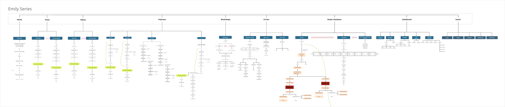
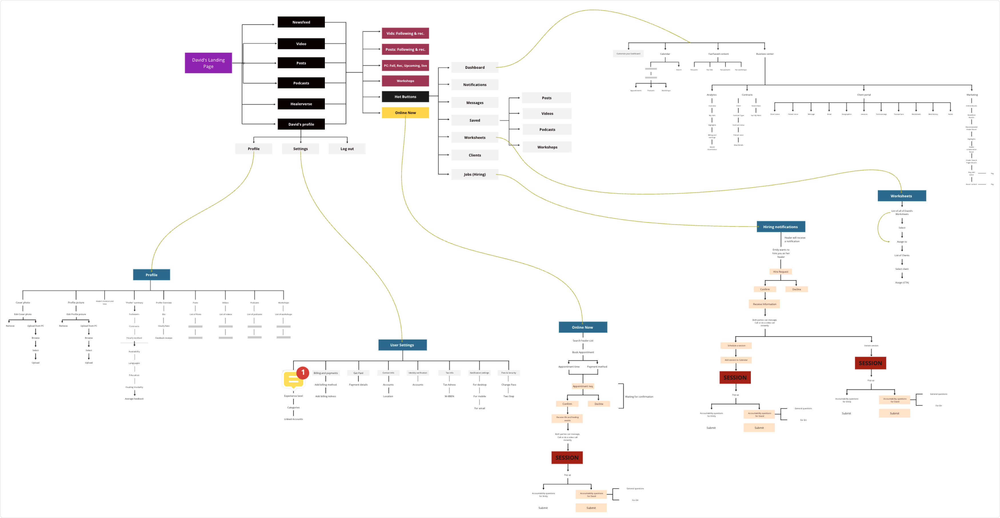
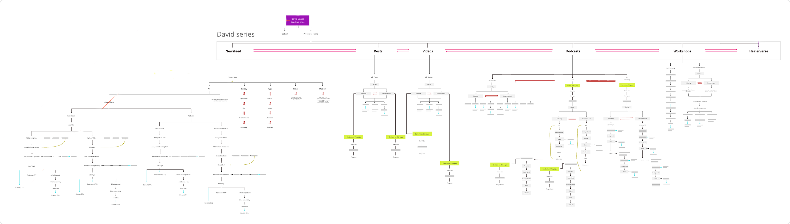
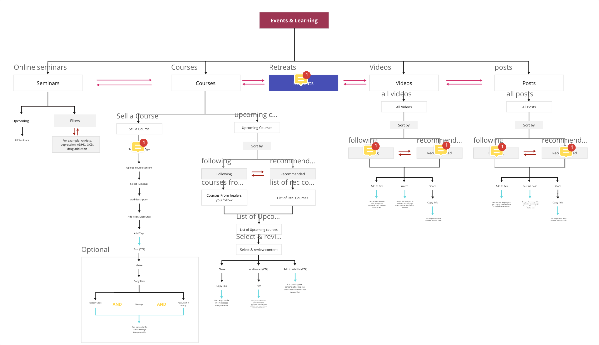
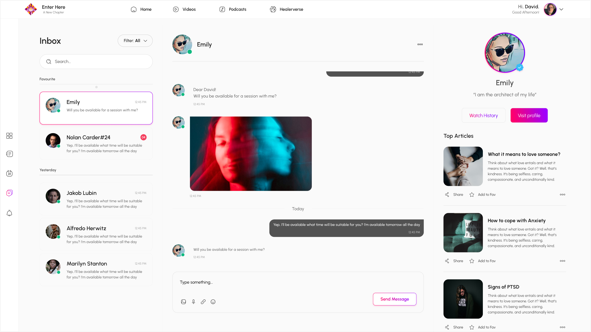
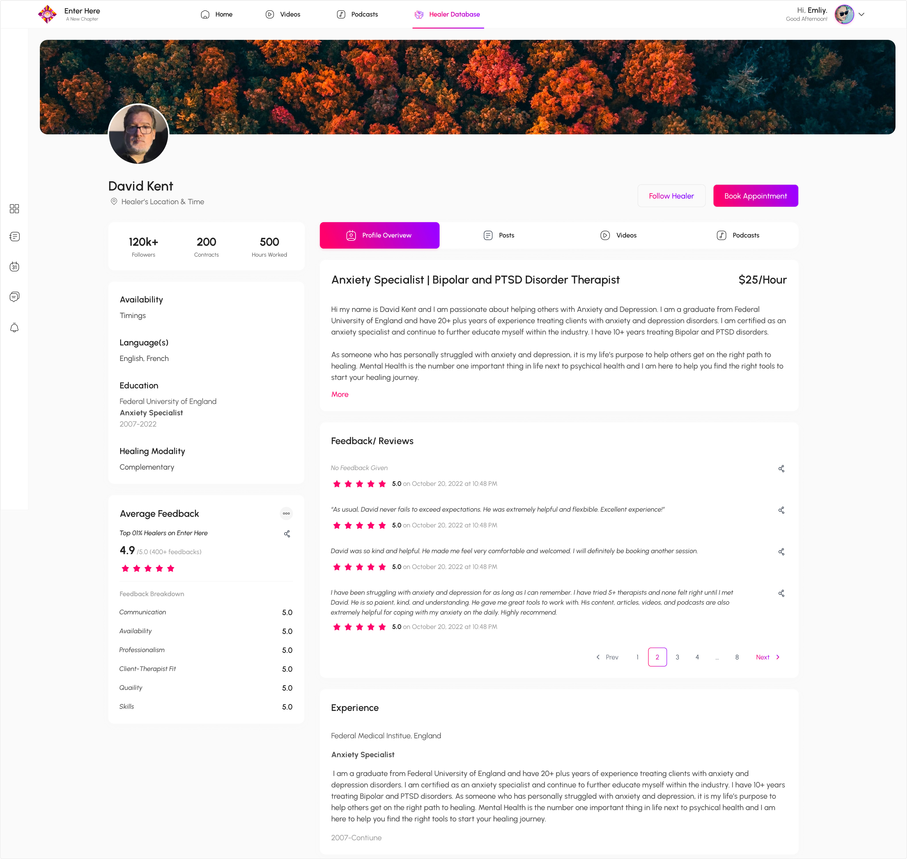
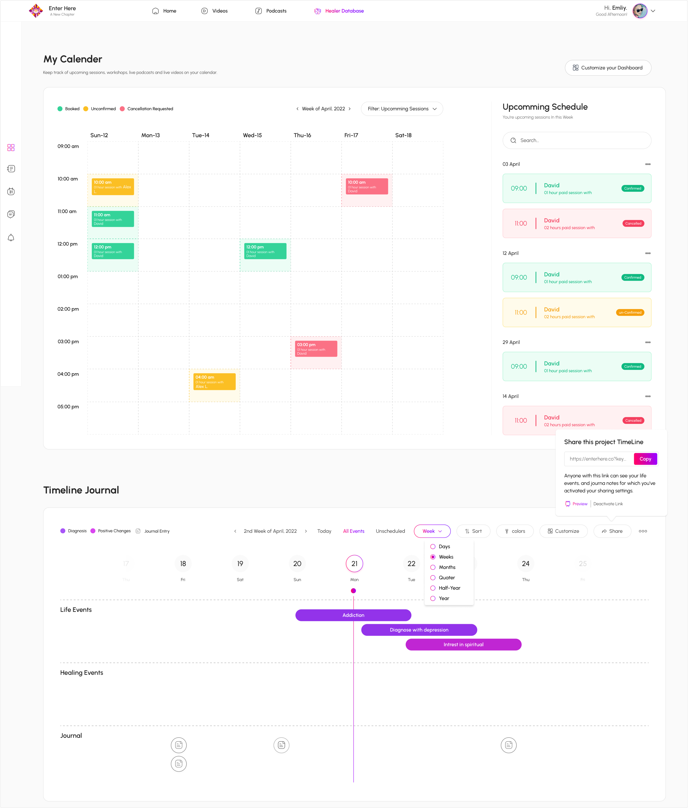
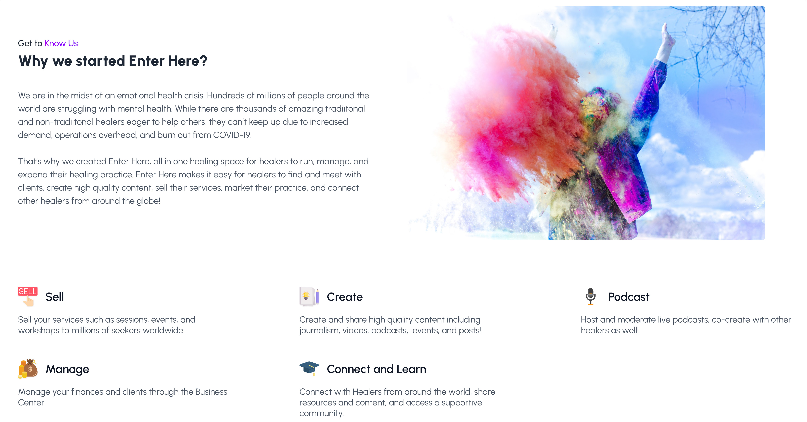
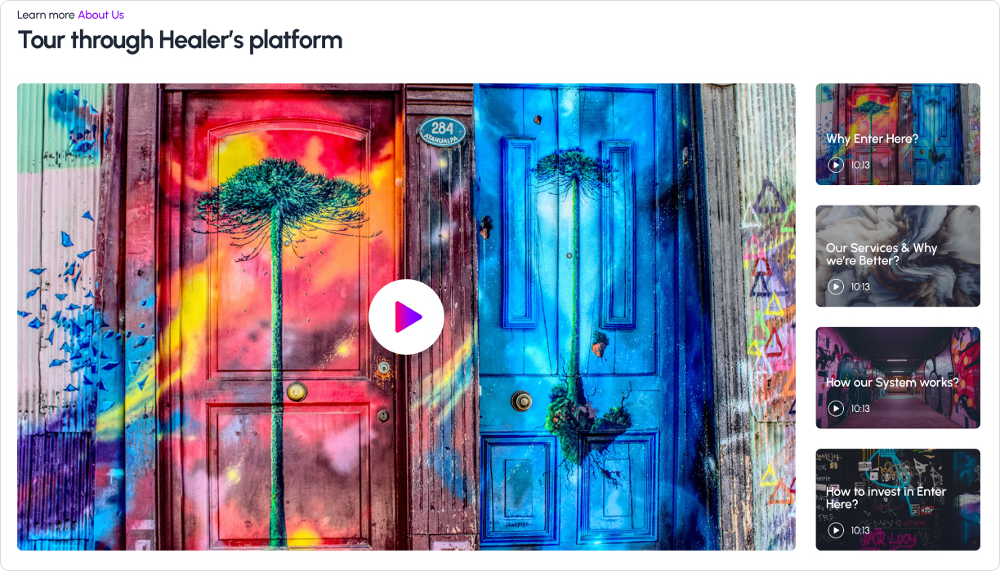
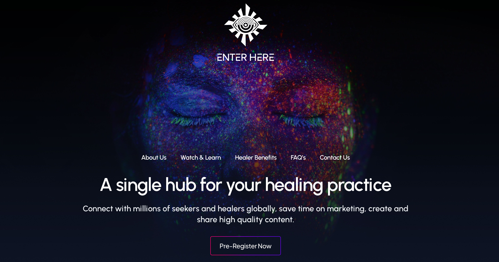

Help-seaker persona 'Emily'- high-level IA / functional map
 Healer persona 'David'- high-level IA / functional map
Healer persona 'David'- high-level IA / functional map
 Help-seaker messages page
Help-seaker messages page

Admin user flows

UI of healer admin backend

Events and learning high-level IA

Healer client account detail page

Healer profile landing page

Help-seaker calendar and timeline page

About us explainer page

Video container page

Hero image landing page
